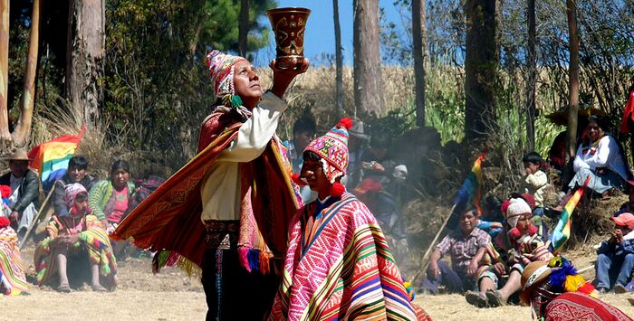
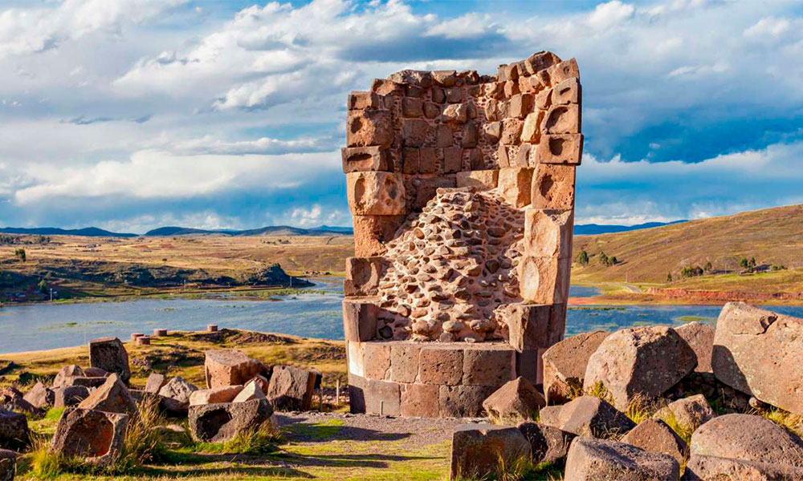
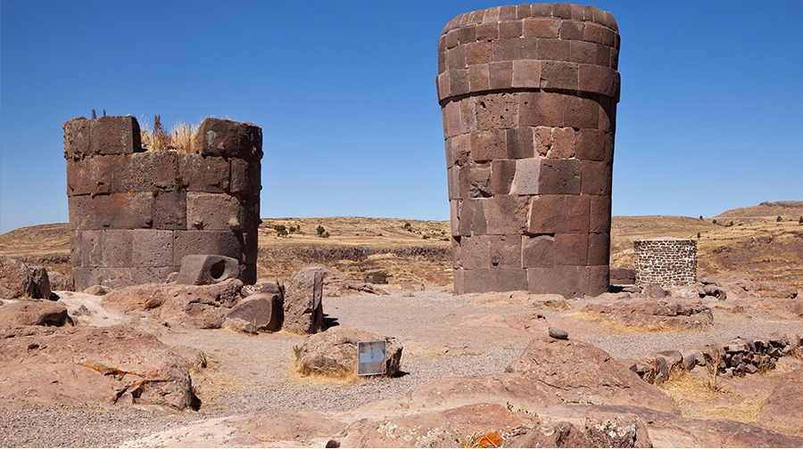
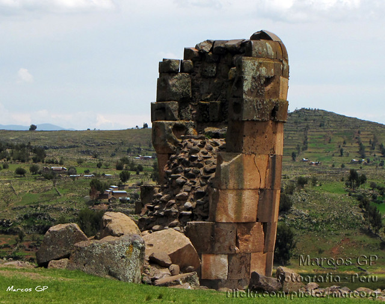
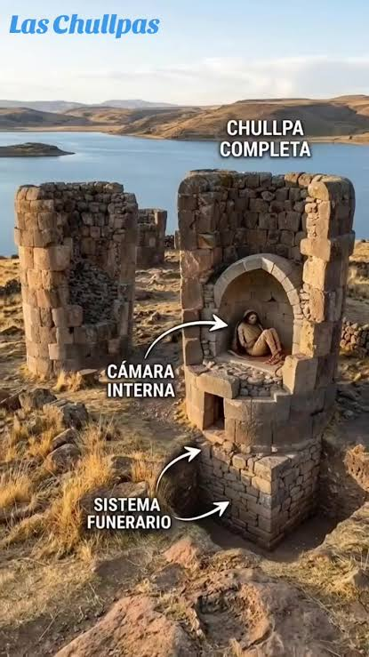
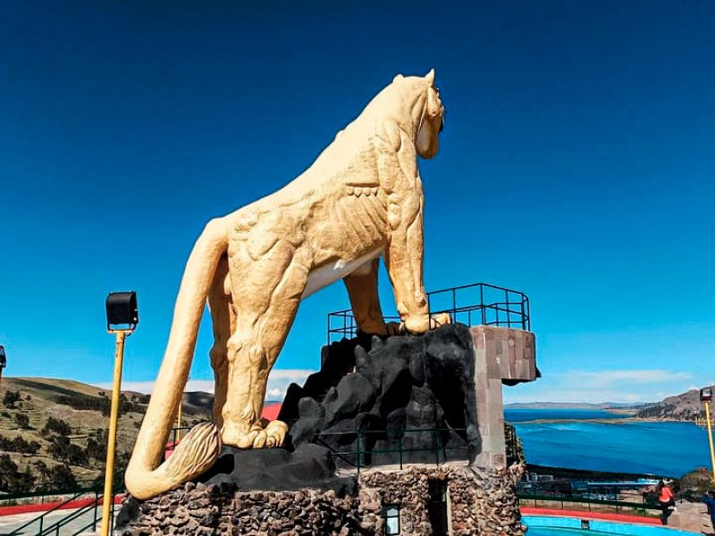
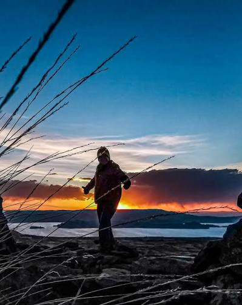
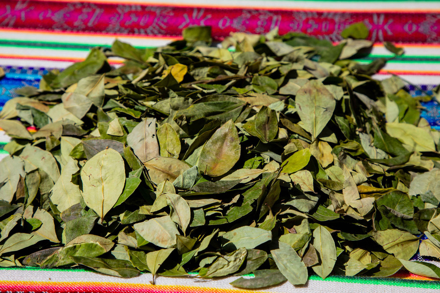

09:15¿Quiénes fueron los collas?
Historia del Altiplano
15 mil vistas · hace 1 semana

Un legado histórico en el corazón del Altiplano
El Complejo Arqueológico de Sillustani se encuentra en el distrito de Atuncolla, cerca de la ciudad de Puno, junto a la hermosa laguna Umayo.
Es reconocido por sus impresionantes chullpas, construcciones funerarias de piedra levantadas por la cultura Colla y posteriormente utilizadas por los incas.
Sus construcciones, paisajes y manifestaciones culturales representan una parte importante del patrimonio histórico del altiplano peruano.
Descubrir más →
Conoce más sobre Sillustani ♡

09:15Historia del Altiplano
15 mil vistas · hace 1 semana
Historia del Altiplano
6,7 mil vistas · hace 2 semanas

07:48Puno Arqueológico
4,1 mil vistas · hace 3 semanas

11:30Puno Arqueológico
3,5 mil vistas · hace 1 mes
Explora los lugares más representativos de Sillustani.

06:45Rutas de Puno
9,3 mil vistas · hace 5 días

04:20Sillustani Videos
21 mil vistas · hace 2 semanas
Hecho en Puno
5,9 mil vistas · hace 1 mes

08:20Rutas de Puno
2,8 mil vistas · hace 2 meses
Vive una experiencia inolvidable en el Altiplano.
Conoce las impresionantes construcciones de piedra, contempla la laguna Umayo y descubre el legado histórico y cultural de Sillustani.
Más información →Mantente informado sobre nuestras actividades.
Vive nuestra tradición con danzas típicas, música andina y expresiones culturales de nuestra región.
▣ 15 de agosto de 2026
Leer más →Descubre uno de los paisajes más representativos del Complejo Arqueológico de Sillustani.
▣ Información cultural
Leer más →¡Queremos escucharte!
¿Tienes preguntas sobre la historia, cultura, galería o visita a Sillustani?
Completa el formulario y envíanos tu consulta.